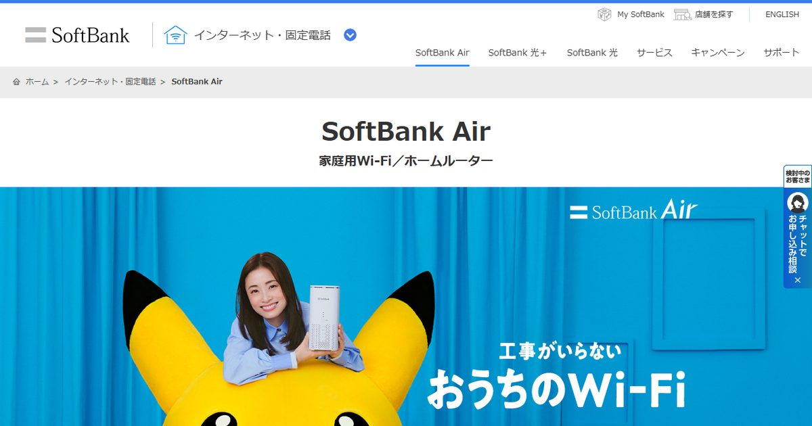

「賃貸マンションで、大家さんに言わずに光回線を契約したらまずいのだろうか」。この質問は本当によく受けます。そして多くの人が、契約そのものを不安がっています。
ですが不安の置き場所が少しずれています。もめるのは契約ではなく工事のほうです。そして工事には段階があり、段階によって「許可が必要か」「一報だけで済むか」「そもそも何も起きないか」がはっきり分かれます。ここを分けて考えられるようになると、確認すべき相手と聞くべき内容が一気に具体的になります。
光回線を契約すること自体に大家さんの許可は要りません。許可が必要になるのは、建物や共用部に手を入れる工事が発生するときだけです。判断の順番は「契約していいか」ではなく「自分の部屋ではどのレベルの工事になるのか」。室内に光コンセントがあれば工事なし(=実質フリー)、壁に穴を開ける工程まで進むなら必ず事前に許可を取る、という線引きになります。
スマホはどれ?マンションタイプで引けるなら:GMOとくとくBB光の料金を見る公式サイトへ →PR・申し込み前にキャッシュバックの受け取り条件を確認できます


先に候補を絞っておくと、確認が1回で済みます
管理会社に聞く前に回線を決めておくと「どの会社のどの工事か」を具体的に伝えられます。スマホのセット割と工事可否から候補を出せます。
「勝手に契約」の何が問題になるのか
まず言葉を分解します。「賃貸で光回線を勝手に契約する」という行為には、性質のまったく違う2つが混ざっています。
| 行為 | 相手 | 貸主の許可 |
|---|---|---|
| 回線サービスを契約する | 自分と回線事業者 | 不要 |
| 建物・共用部に手を入れる | 建物の所有者・管理者 | 必要になり得る |
上段は入居者と通信事業者のあいだの私的な契約です。電気やガスの契約と同じで、貸主の同意を条件にする法律上の規定はありません。だから「勝手に契約したこと」そのものを理由に責任を問われる筋合いは、原則としてありません。
問題は下段です。光回線の開通工事は、自分が借りている部屋の中だけでは完結しないことが多いのです。電柱から建物への引き込み、外壁に沿ったケーブルの固定、共用部にあるMDF室(建物内の配線を集約している設備室)での結線、既存配管への通線。これらはすべて自分が借りている範囲の外で、建物の所有者の持ち物に触る作業です。
加えて賃貸借契約書には「造作の設置・変更には貸主の承諾を要する」という条項が入っているのが通例で、退去時には借りた当時の状態に戻す原状回復の義務があります(民法第621条)。壁に穴を開ければ、その穴は原状回復の対象になります。
「契約は自由。建物に触る工程だけが要許可」。この切り分けができれば、管理会社に何を聞けばいいかが自動的に決まります。聞くべきは「契約していいですか」ではなく「この工事をしていいですか」です。
許可の要否は工事4レベルで決まる(判定表)
ここが記事の核心です。光回線の開通工事は、建物の状況によって作業量がまったく違います。同じ「光回線を引く」という言葉でも、機器が宅配便で届くだけのケースと、壁に穴を開けるケースが同じ名前で呼ばれているのが混乱の原因です。作業が部屋の外に出るか/建物に元へ戻せない加工をするかの2軸で、4段階に整理しました。
| レベル | 工事の内容 | 部屋の外での作業 | 建物への加工 | 許可の必要性 |
|---|---|---|---|---|
| L0 無派遣工事 |
室内に光コンセントがあり、機器が送られてくるだけ。作業員は来ない | なし | なし | 原則不要 |
| L1 既設設備の結線 |
建物に光回線が導入済み。MDF室で自分の部屋の回線を結線し、室内の既設配線を使う | あり(共用部のみ) | なし | 連絡が必要(鍵の開錠を頼むことが多い) |
| L2 穴あけなしの引き込み |
電柱から新規に引き込む。電話線の配管・エアコンダクト・サッシの隙間を経路に使う | あり(外壁・共用部) | ごく軽微(ビス止め程度) | 要許可。通りやすい |
| L3 穴あけを伴う引き込み |
通せる経路がなく、外壁や壁に穴を開ける。固定金具を付ける場合もある | あり | あり(元に戻せない) | 必須。原状回復の取り決めまで合意 |
※ レベル区分は、許可の要否を判断しやすくするために当サイトが独自に整理したものです。事業者が使う正式な工事区分ではありません。
この表のいちばん実用的な使い方は、「自分はL0かもしれない」という可能性を先に潰すことです。すでに建物に光回線が引かれていて室内に光コンセントがある物件で、大家さんに「工事の許可をください」と頭を下げるのは、そもそも不要な手続きです。逆にL3の可能性がある物件で無断で進めると、退去の立ち会いでほぼ確実に見つかります。
引き込み経路の可否は、工事担当者が現地を見て初めて判断できることがあります。事業者は電話線の配管やエアコンダクトなど既存の隙間から通せるかを先に探し、どうしても通せないときに穴あけを選ぶという順番で作業します。つまり「L2のはずだったのに現場でL3になる」ことが起こり得ます。許可を取るときは、この分岐まで含めて話しておくのが後の揉め事を防ぐコツです。
自分がどのレベルかを事前に見分ける3ステップ
所要15分ほどで、かなりの精度まで絞れます。順番どおりに進めてください。
-
部屋の中を見る(3分)
壁のコンセント周りを探します。「光」と書かれた差込口、または光ケーブルの差込口がある一体型のローゼットがあれば、建物に光配線方式が入っていてL0の可能性が高いです。電話用のモジュラージャックだけならVDSL方式、LANのジャックがあればLAN配線方式が疑われます。どれも無い場合は、建物に設備がない=L2以上の可能性があります。
-
建物の設備を調べる(5分)
回線事業者の提供エリア検索に住所+建物名を入れると、その建物で「マンションタイプ」が使えるか、配線方式が何かまで表示されることがあります。マンションタイプの提供があるなら、建物に設備が入っている=許可のハードルは大きく下がります。auひかりやNURO光のような独自設備の回線は、それぞれの公式サイトで別に確認が必要です。
-
事業者に「工法」を聞く(5分)
申し込み前の問い合わせ窓口で、この2つを聞きます。「この建物は無派遣工事で済みますか」「派遣工事になる場合、壁に穴を開ける可能性はありますか」。この答えがそのまま、管理会社に伝える材料になります。ここを飛ばすと、次章のテンプレが埋まりません。
建物がマンションタイプに対応しているのに、戸建て向けプラン(ファミリータイプ)で申し込んでしまうと、電柱から自分の部屋へ直接引き込む工事になり、L2〜L3に跳ね上がります。マンションタイプがあるならそれを選ぶのが、許可のハードルをいちばん下げる方法です。速度を理由に戸建てタイプを選びたくなる場面もありますが、賃貸では許可の難易度が段違いになる点を天秤にかけてください。建物の配線方式そのものが遅さの原因になっているなら、VDSL方式を速くする方法で改善余地を先に確認しておくと判断しやすくなります。
無断で進めたときに実際に起きること
ネット上では「強制退去」という言葉が目立ちますが、実務で現実に起きやすい順に並べると景色が違います。
| 起きること | 可能性 | ダメージの中身 |
|---|---|---|
| 退去時に原状回復費用を請求される | 高い | 穴や固定金具の補修費。実費ベースで請求され、敷金から差し引かれることが多い |
| 撤去・是正を求められる | 中 | 引いた回線を解約して撤去。工事費の残債と解約金だけが残る二重の損 |
| 共用設備をめぐるトラブル | 中 | MDFの空きポートや一括契約の取り決めに触れ、管理会社と事業者の間の話になる |
| 契約解除(退去)を求められる | 低い | 穴あけ1箇所で直ちに至る話ではないが、関係悪化という実害は残る |
そしてもう一点。「黙っていればバレない」は、光回線ではかなり成立しにくいです。理由は工事の性質そのものにあります。
- 作業員が共用部に立ち入る。MDF室の鍵を管理会社から借りる必要がある物件も多い
- 引き込んだケーブルは外壁に沿って見える。他の住戸の窓からも分かる
- 退去時の立ち会いで穴と金具は必ず目に入る。何年経っても消えない
つまり隠すコストのほうが高いのです。L0・L1なら隠す必要がなく、L2・L3なら隠しきれない。だからこそ、先に聞く価値があります。
通る確率が上がる「聞き方」とテンプレ
相談を受けていていちばん残念なのが、聞き方のせいで断られているケースです。管理会社の担当者から見て、工事内容が分からない依頼はリスクの見積もりができないため、いちばん安全な「ダメです」に寄ります。悪意ではなく、判断材料がないだけです。
- 「光回線を引いてもいいですか?」
- 「ネットが遅いので工事したいです」
- 電話だけで済ませ、記録を残さない
- 会社名・プラン名・工法まで特定して伝える
- 費用は自己負担と先に明言する
- 原状回復の約束をこちらから出す
- 穴あけが必要になった場合は再度連絡すると添える
この4要素を入れるだけで、返ってくる言葉が「ダメです」から「工事の日程を教えてください」に変わることが珍しくありません。以下はそのままコピーして使える文面です。角括弧を自分の情報に置き換えてください。
件名:[部屋番号]号室 インターネット回線の開通工事について(ご確認のお願い)
お世話になっております。[部屋番号]号室の[氏名]です。
自室にインターネット回線を導入したく、事前にご確認をお願いしたくご連絡しました。
・回線:[事業者名・プラン名(例:マンションタイプ)]
・工事内容:[事業者から聞いた工法。例:建物のMDFでの結線と室内の既設配線の利用のみで、壁への穴あけはありません]
・共用部での作業:[有無。ある場合は作業内容と所要時間]
・費用:工事費・月額とも当方の全額負担です
・退去時:貸主様のご指示に従い、原状回復が必要な場合は当方の費用で対応します
なお現地調査の結果、やむを得ず壁への穴あけが必要と判断された場合は、着工前に必ず改めてご相談します。
ご承諾いただけるか、ご確認のうえお返事いただけますと幸いです。
ポイントは最後の一文です。L3に化けたら止まると宣言しておくと、管理側は「最悪のケースでも勝手に穴を開けられることはない」と分かるので、承諾のリスクがぐっと下がります。
担当者は数年で変わります。退去時に「聞いていない」となると、記録のないこちらが不利です。電話で承諾をもらったら、「先ほどお電話でご承諾いただいた内容を記録として送ります」とメールを1本入れるだけで十分な証跡になります。返信がなくても、送った事実は残ります。
断られたときの現実的な代替
それでもNGになることはあります。理由は「建物の構造上できない」「一括導入回線との取り決めがある」「前例を作りたくない」のいずれかがほとんどです。構造上の問題なら交渉の余地はなく、そこで粘るよりも工事のいらない選択肢に切り替えたほうが早く快適になります。
| 代替策 | 使えるまで | 月額の目安 | 向いている状況 |
|---|---|---|---|
| ホームルーター | 最短で申込の数日後 | 4,000〜5,500円前後 | 工事がNG。5Gの電波が届く。すぐ使いたい |
| 建物設備のまま改善 | 即日(自分で作業) | 0円+機器代 | ルーターが古い・無線だけで使っている |
| スマホのテザリング | 即日 | 0円(プラン内) | 在宅時間が短く、通信量が少ない |
いちばん現実的なのはホームルーターです。コンセントに挿すだけなので建物への加工がゼロ、つまり許可の論点自体が発生しません。退去時は持って出るだけです。5G対応エリアなら、VDSL方式の建物設備(上限100Mbps)より実測が上回るケースもあります。置き場所と電波の見極め方は工事不要WiFiの比較記事に、ドコモのhome 5Gを検討するならエリア確認の手順にまとめています。


ホームルーターは工事も配線の加工もないため、貸主の許可という論点が生まれません。ソフトバンク・ワイモバイルのスマホならセット割の対象にもなります。契約前に、住所と階数でエリア判定を見ておくと失敗が減ります。
ソフトバンクエアーのキャンペーンを見る割引後の月額とセット割の条件はこちら※ 電波状況は建物の階数・窓の向きで大きく変わります。申込前にエリア判定を確認し、届いたら窓際で実測してください。
建物の設備をそのまま使う道も捨てないでください。「インターネット無料」の物件が夜だけ遅いのには構造的な理由があり、自衛策で改善する余地が残っていることもあります(無料ネットが遅い理由と自衛策)。そもそも工事を断られる理由の切り分けは賃貸で工事ができないときの対処法に詳しくまとめました。
分譲の場合は相手が「管理組合」になる
分譲マンションの持ち家なら自由だと思われがちですが、光回線については話が少し違います。区分所有の建物では、自分の所有物は専有部分だけで、外壁・パイプスペース・MDF室・共用廊下は共用部分にあたり、管理組合が管理しています。
- 専有部分の中だけで完結する工事(既設の光コンセントを使う等)は自由に進められます
- 共用部分に手を入れる工事は、管理規約に従って理事会や管理組合の承認が必要になることがあります
- 承認が総会の決議事項になっている場合、次の総会まで数ヶ月待つこともあります。急ぐならホームルーターで一旦しのぐのが現実的です
賃貸で借りている分譲マンション(いわゆる分譲賃貸)は、判断する人が貸主・管理会社・管理組合の3者に分かれます。まず管理会社に連絡し、「管理組合の承認も必要か」を確認してもらうのが最短ルートです。自分から管理組合に直接当たると、窓口が二重になって話が止まりやすくなります。
よくある質問
無派遣工事なら本当に何も連絡しなくていいですか?
もう工事してしまいました。今からできることはありますか?
退去するとき、光コンセントは撤去するのですか?
「建物のネットがあるから不要」と断られました
ホームルーターにも許可は必要ですか?
まとめ:聞くべきは「契約」ではなく「工事」
- 光回線を契約すること自体に大家の許可は不要。要許可なのは建物に触る工程だけ
- 判断は工事4レベルで。L0(無派遣)なら実質フリー、L3(穴あけ)は必ず事前許可
- 自分のレベルは室内の光コンセント→提供エリア検索→事業者への工法確認の3ステップで絞れる
- 聞き方は工法+自己負担+原状回復+穴あけ時は再相談の4点セット。承諾は記録に残す
- 断られたらホームルーター。工事がないので許可の論点そのものが消える
引ける見込みが立ったら回線選びへ(光回線おすすめ7社比較)。引越しと同時に検討しているなら、手続きの順番は引越しのネット回線ガイドのほうが実務に沿っています。
- 民法 第621条(賃借人の原状回復義務)/ 第606条・第607条の2(修繕に関する規定)
- NTT東日本・NTT西日本「フレッツ光 提供エリア検索」「開通工事について」(2026年9月確認)
- NTT東日本「フレッツ 光ネクスト マンション全戸加入プラン」サービス説明(2026年9月確認)
- So-net・BIGLOBE光・NURO光 各公式サイトの穴あけ工事に関する解説ページ(2026年9月確認)
- 各回線事業者の工事・料金に関する公式ページ(2026年9月確認)